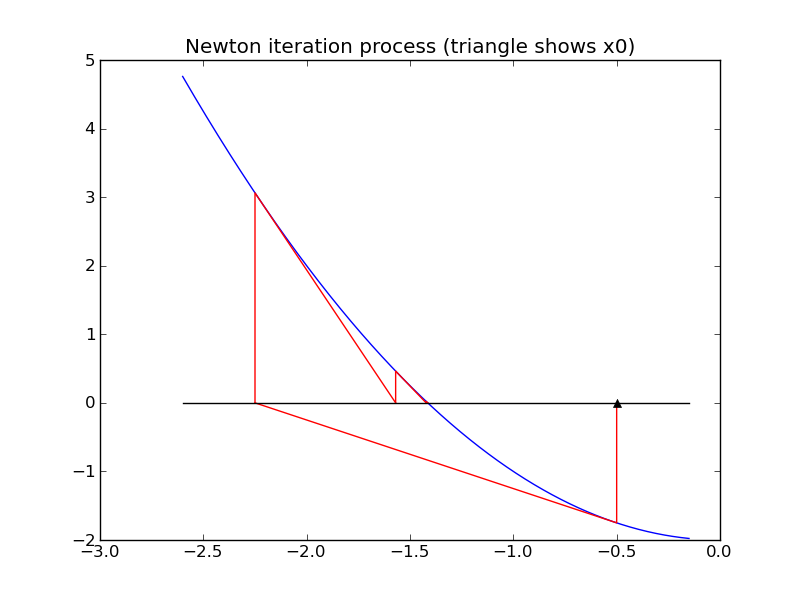
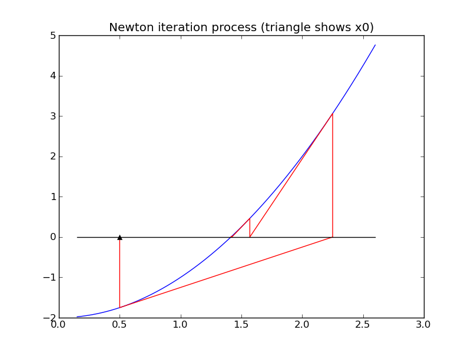

Special functions¶
There are many functions that are used so frequently that they are given special names. Familiar examples are sin, cos, sqrt, exp, log, etc.
Most programming languages have build-in (intrinsic) functions with these same names that can be called to compute the value of the function for arbitrary arguments.
But “under the hood” these functions must be evaluated somehow. The basic arithmetic units of a computer are only capable of doing very basic arithmetic in hardware: addition, subtraction, multiplication, and division. Every other function must be approximated by applying some sequence of arithmetic operations.
There are several ways this might be done....
Taylor series expansions¶
A finite number of terms in the Taylor series expansion of a function gives a polynomial that approximates the desired function. Polynomials can be evaluated at any point using basic arithmetic.
For example, the section on Fortran examples: Taylor series discusses an implementation of the Taylor series approximation to the exponential function,
\(exp(x) = 1 + x + \frac 1 2 x ^2 + \frac 1 6 x^3 + \cdots\)
If this is truncated after the 4 terms shown, for example, we obtain a polynomial of degree 3 that is easily evaluated at any point.
Some other Taylor series that can be used to approximate functions:
\(sin(x) = x - \frac{1}{3!} x^3 + \frac 1 {5!} x^5 - \frac{1}{7!} x^7 + \cdots\)
\(cos(x) = 1 - \frac 1 2 x^2 + \frac{1}{4!} x^4 - \frac{1}{6!} x^6 + \cdots\)
Newton’s method for the square root¶
One way to evaluate the square root function is to use Newton’s method, a general procedure for estimating a zero of a function \(f(x)\), i.e. a value \(x^*\) for which \(f(x^*) = 0\).
The square root of any value \(a>0\) is a zero of the function \(f(x) = x^2 - a\). (This function has two zeros, at \(\pm\sqrt{a}\).
Newton’s method is based on taking a current estimate \(x_k\) to \(x^*\) and (hopefully) improving it by setting
\(x_{k+1} = x_k - \delta_k\)
The increment \(\delta_k\) is determined by linearizing the function \(f(x)\) about the current esimate \(x_k\) using only the linear term in the Taylor series expansion. This linear function \(G_k(x)\) is
\(G_k(x) = f(x_k) + f'(x_k)(x-x_k)\).
The next point \(x_{k+1}\) is set to be the zero of this linear function, which is trivial to find, and so
\(\delta_k = f(x_k) / f'(x_k)\).
Geometrically, this means that we move along the tangent line to \(f(x)\) from the point \((x_k,f(x_k))\) to the point where this line hits the x-axis, at \((x_{k+1}, 0)\). See the figures below.
There are several potential difficulties with this approach, e.g.
- To get started we require an initial guess \(x_0\).
- The method may converge to a zero from some starting points but not converge at all from others, or may converge to different zeros depending on where we start.
For example, applying Newton’s method to find a zero of \(f(x) = x^2-2\) coverges to \(\sqrt{2} \approx 1.414\) if we start at \(x_0=0.5\), but convergest o \(-\sqrt{2} \approx -1.414\) if we start at \(x_0=-0.5\) as illustrated in the figures below.
 {kind=link}
{kind=link}
An advantage of Newton’s method is that it is guaranteed to converge to a root provided the function \(f(x)\) is smooth enough and the starting guess \(x_0\) is sufficiently close to the zero. Moreover, in general one usually observes quadratic convergence. This means that once we get close to the zero, the error roughly satisfies
\(|x_{k+1} - x^*| \approx C|x_k-x^*|^2\)
The error is roughly squared in each step. In practice this means that once you have 2 correct digits in the solution, the next few steps will produce approximations with roughly 4, 8, and 16 correct digits (doubling each time), and so it rapidly converges to full machine precision.
For example, the approximations to \(\sqrt{2}\) generated by Newton’s method starting at \(x_0=0.5\) are:
k, x, f(x): 1 0.500000000000000E+00 -0.175000E+01
k, x, f(x): 2 0.225000000000000E+01 0.306250E+01
k, x, f(x): 3 0.156944444444444E+01 0.463156E+00
k, x, f(x): 4 0.142189036381514E+01 0.217722E-01
k, x, f(x): 5 0.141423428594007E+01 0.586155E-04
k, x, f(x): 6 0.141421356252493E+01 0.429460E-09
k, x, f(x): 7 0.141421356237310E+01 0.444089E-15
The last value is correct to all digits.
There are many other methods that have been developed for finding zeros of functions, and a number of software packages that are designed to be more robust than Newton’s method (less likely to fail to converge) while still converging very rapidly.